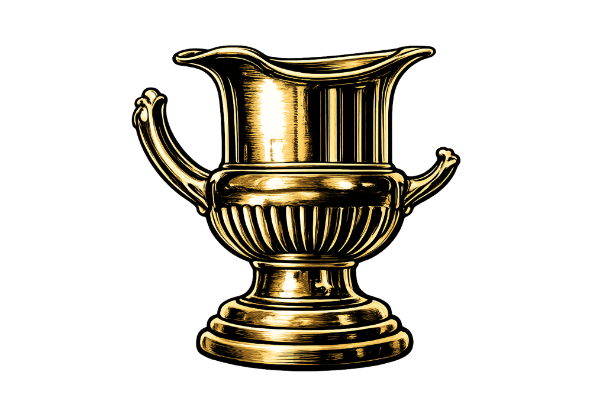

There are certain traditions in golf that stand the test of time.

The Masters at Augusta National Golf Club.And somewhere well beneath those sacred institutions — both in prestige and overall human behavior — sits the DH Cup.
Conceptualized in 1999 during the wedding festivities of Drew Roberts, the DH Cup began the same way many legendary ideas begin: with a group of SAE fraternity brothers drinking heavily and dramatically overestimating both their golf ability and organizational skills.
Inspired by the grandeur of the Ryder Cup, the founding members envisioned an annual competition built on honor, camaraderie, tradition, and excellence.
Instead, they accidentally created a traveling circus fueled by trash talk, gambling, Tito’s vodka, and men well past their prime trying to ignore the fact that college was over 30 years ago.